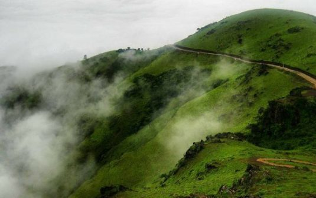
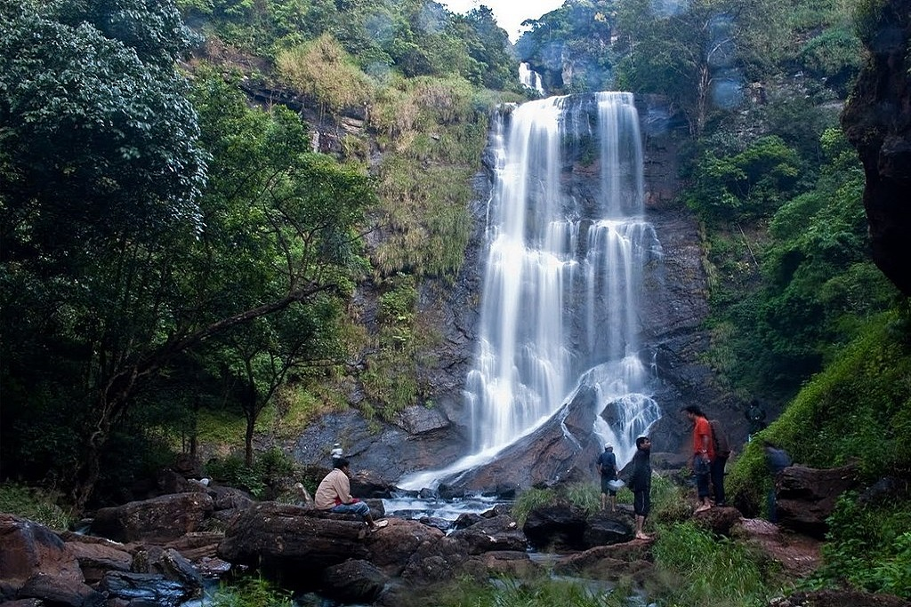
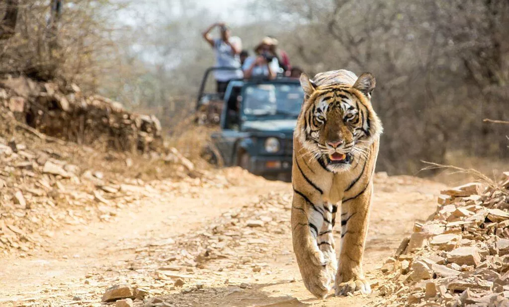
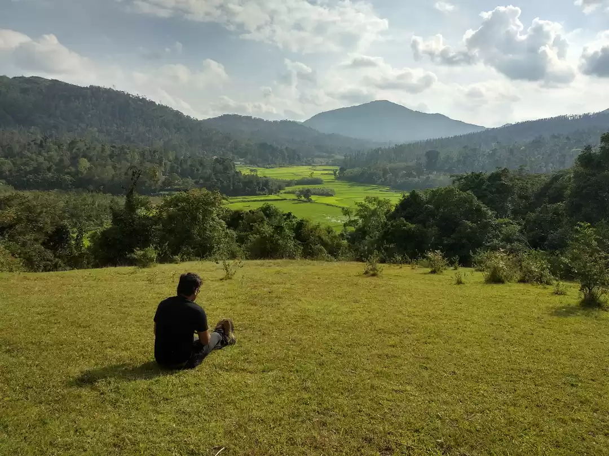
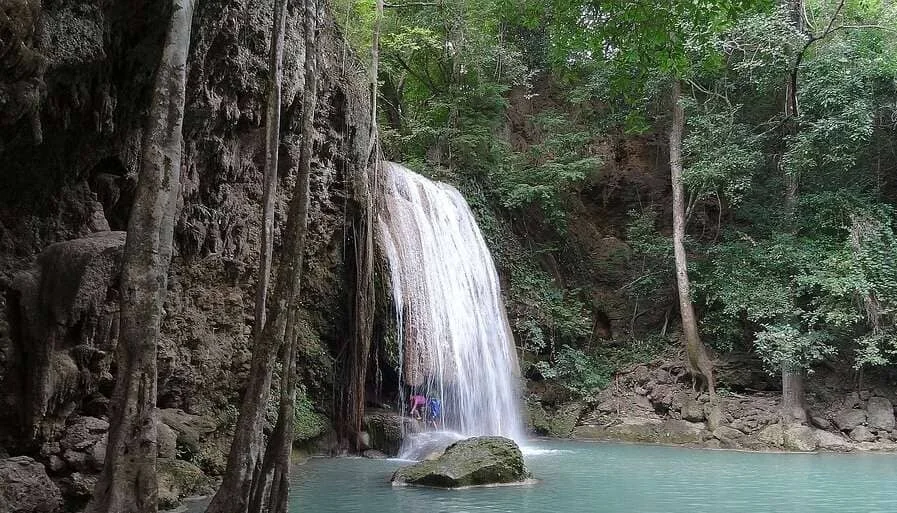
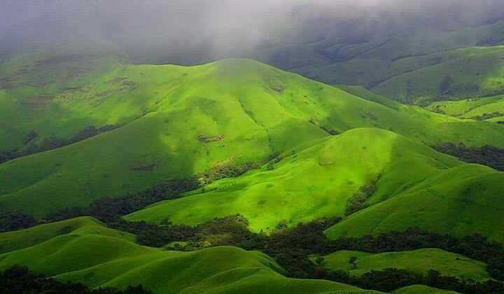
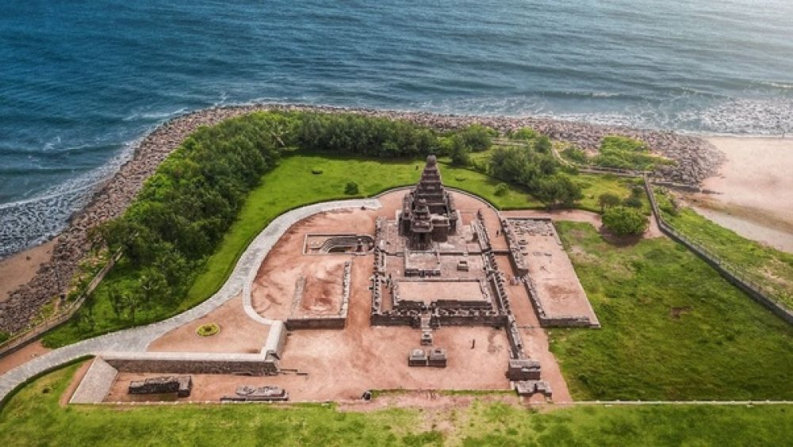
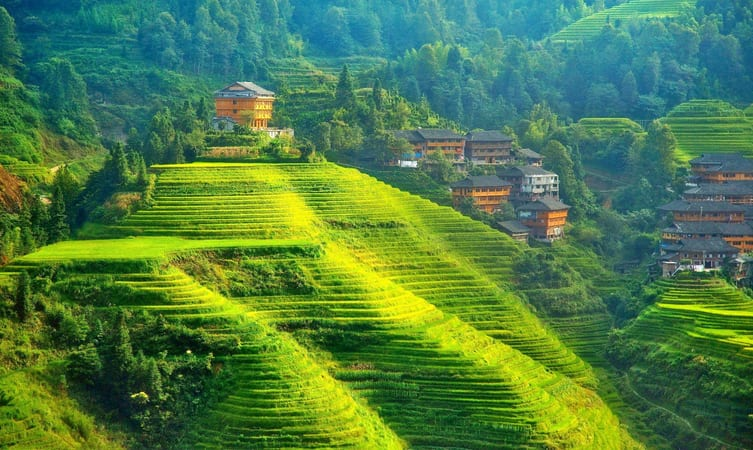
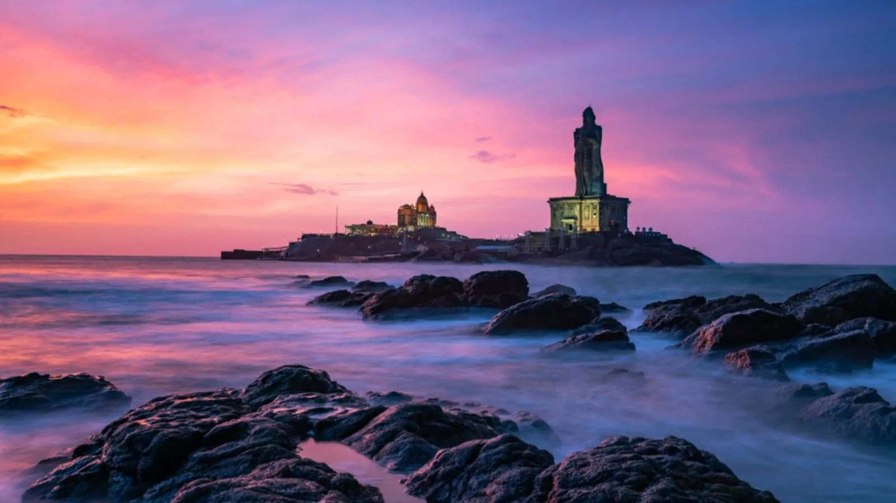

Explore places with Nithesh Tours And Travels
Places in Chikmagalur
Mullayanagiri
One of the most spectacular attractions in Chikmagalur is Mullayanagiri that is known for its jaw dropping natural beauty. With its calming ambience formed by lush greenery, misty weather and rugged rocks, Mullayanagiri is a heavenly place to relish your vacation. Mullayanagiri Peak is a heaven for adventure junkies who wish to partake in a number of thrilling activities like road biking, trekking and mountain biking.This place is also renowned for a small temple dedicated to Tapasvi Mullappa swamy and a trek to the peak takes one through many landmarks like some caves, a stream and a Nandi statue. Mullayanagari is one of the few places to visit in Chikmagalur where you will find yourself at loss of words as you behold the most majestic views of the landscape.
Hannamanahalla Falls

The Fall is located en route from Chickamagaluru to Mullayanagiri and provides an opportunity to take a break from driving up. A long trail of falling water is visible above and below the road level and there is an opportunity for quickly taking a couple of pics. And if you are hungry, you can probably pick up a snack from the stalls next to the road. Good place to stop for a break!
Jhari Falls

Jhari Falls is a waterfall in Chikmagalur district in Karnataka state, India, near Mullayanagiri and Baba Budan Giri. Water originating in the mountains flows over steep rocks, in a wide and thin white layer. The waterfall is 267 km from Bengaluru and 24 km from Chikmagalur. Kadur Junction is the nearest railway station (57 km) and Mangaluru Airport is the nearest airport (180 kms). Taxis can be hired from Kadur or Chikmagalur, but the last five km to the falls are accessible only via jeep.
Dattatreya Peeta

The Inam Dattatreya Peeta is one of the significantly important places to visit in Chikmagalur and is a top religious centre in the country. Inam Dattatreya Peeta is also popularly known as Inam Dattapeeta, and in Chikmagalur tourism, the number of visitors in the place has always been high. The reason as to why this place is immensely significant as a sacred spot is that the Inam Dattatreya Peeta is a holy place for both Muslims and Hindus. Religious spots like with such religious harmony are rare to find in the country and hence are always included in any Chikmagalur tour package.
Kallathigiri Falls

Kalhattigiri Falls is a waterfall on the headwaters of the river , located at Kallathigiri, Tarikere Taluk in Chikmagalur district of Karnataka. The waterfall is 10 kilometers (6.2 mi) away from Kemmangundi hill station.
Hebbe Falls
Hebbe Falls is situated about 10 km away from the famous hill station Kemmangundi. This waterfalls is inside a coffee estate and can be reached either by walk or four-wheeler. Hebbe Falls gushes down from a height of 551 ft in two stages to form Dodda Hebbe (Big Falls) and Chikka Hebbe (Small Falls.)
Kemmangundi

Kemmannugundi (Red Soil Pit) is a hill station in Tarikere taluk of Chikkamagaluru district in the state of Karnataka, India. It is at the elevation of 1434m above sea level, with its peak at 1863m. This was the summer retreat of Krishnaraja Wodeyar IV, and as a mark of respect to the king, it is also known as Sri Krishnarajendra Hill Station. The station is ringed by the Baba Budan Giri Range, with cascades, mountain streams, and lush vegetation. Kemmangundi has ornamental gardens and mountains and valleys views.
Z point

One must try the Z point trek while in Chikmagalur. Its 3.5km one way walk, the road starts through forest and opens up in grassland slopes. The trek is quite easy and most of the path is flat land. Towards the end we experienced wind velocity at almost 80kmph. Always struggle to reach the peak, as the views are mesmerizing.
Belavadi Temple

The Veera Narayana temple, also referred to as the Viranarayana temple of Belavadi, is a triple Hindu temple with a complex Hoysala architecture completed around 1200 CE. Close to Halebidu, this is a better preserved large Hoysala monument found in the small village of Belavadi, Chikkamagaluru district.
Hallebedu Temple

Hoysaleswara temple, also referred simply as the Halebidu temple, is a 12th-century Hindu temple dedicated to the god Shiva. It is the largest monument in Halebidu, a town in the state of Karnataka, India and the former capital of the Hoysala Empire. The temple was built on the banks of a large man-made lake, and sponsored by King Vishnuvardhana of the Hoysala Empire. Its construction started around 1121 CE and was complete in 1160 CE.
Yagachi Dam

It's on the way to Chikmagalur, 3kM from Belur & just next to the road, worth a visit of max 10min. A relatively small dam that can be viewed from the side. A small garden & pathway is available for walking. Photo/Videography is allowed. Further 2kM down, 1KM from highway & drive on mud road, you will find the Yagachi Water sports facility on the backwaters of the same dam.
Hirekolale lake

Amidst all the lush greenery and mountain ranges, a calm and serene lake called Hirekolale lake is present at the foothills of Mullayanagiri hills, another popular place to visit in Chikmagalur. The huge mountains of the western ghats surrounding the lake, further beautify the lake making it a favorite among nature lovers.
Bandekallu Gudda

Bandekallu Gudda is a spectacular hill station located in Mallanduru of Chikkamagaluru district. This hillock is very suitable for fully packed adventurous hiking. Since the road facility is good, you can also facilitate offroad biking. You can also take a jeep to climb the hill. After climbing the hill, you can see the fantabulous view of many hills like kemmangundi, Mullayanagiri, and forests. Bandekallu is only 14km from Rain tree stay.
Bhadra Tiger Safari
The sanctuary takes its name from the Bhadra River, its lifeline. Popularly known as Muthodi Wildlife Sanctuary, after the village on its periphery, it was declared a Project Tiger reserve. But apart from the tiger, it is a great place to sight and observe other mammals, reptiles, and more than 250 species of birds, many of which are endemic to the Western Ghats. The state-run Jungle Lodges & Resorts runs the River Tern Lodge located on a hillock on the edge of the Bhadra reservoir, near Lakkavali. It is a stone's throw away from the northern boundary of the Bhadra Tiger Reserve. Muthodi is the southern part of Bhadra Wildlife Sanctuary and is located in one of the most picturesque forest patches here. The sanctuary is also home to the Jagara Giant, the largest teak tree in the state which has a girth of 5.1 m with a height of 32 m and is said to be around 400 years old. Bhadra Tiger Reserve spans about 500 square km, spread across two districts Shivamogga and Chikmagalur districts.
Mallandur Shooting point
Mallanduru viewpoint also called as Mallanduru shooting point is just 2 km from the town. After the initial few meters of village ambiance, the route traverses through a small thick stretch of coffee estate and forest and it opens suddenly to the vast wide top of a small hillock. a narrow mud road takes you to the end of the open hill. This place makes you feel like you are in mid of some beautiful golf course with the spectacular view of paddy fields on one side and the hills covered by lush green forest on the other side.
Ukkada falls
Ukkada Falls are one of the lesser-known waterfalls in the Chikmagalur region that are safely tucked away in the lush green jungle area. Verdant green environments make up the majority of this location which is not only green but highly biodiverse as well, with many different species of animals, birds, and plants to explore and observe.
Sringeri Sharada temple Shankaracharya mutta

Sri Sringeri Mutt, as the Pitham is referred to in common parlance, is situated on the banks of the Tunga River in Sringeri. The Mutt complex consists of shrines on both the northern and southern banks of the river. The three prominent shrines on the northern bank of the Tunga are dedicated to the presiding deity of the Pitham and the divinity of Atma-vidya - Sri Sarada, Sri Adi Sankara, and Jagadguru Srī Vidyasankara Tīrtha, the 10th Jagadguru of the Pitham. The southern bank houses the residence of the reigning pontiff, the adhisthanam shrines of the previous pontiffs and the Sadvidya Sanjivini Samskrita Mahapathashala.
Kudremukh
Kudremukha is the name of a mountain range and an individual mountain peak located in Chikmagalur district, in Karnataka, India. It is also the name of a small hill station and iron ore-mining town situated near the mountain, about 20 kilometres from Kalasa in Kalasa Taluk. The name Kuduremukha literally means "horse-faced" in Kannada and refers to a particular picturesque view of a side of the mountain that resembles a horse's face. It was also referred to as 'Samseparvata', historically since it was approached from Samse village. Kuduremukha is Karnataka's 2nd highest peak after Mullayanagiri and 26th highest peak in western ghats. The nearest International Airport is at Mangalore which is at a distance of 99 kilometres.
Kalaseshwara temple kalasa

Nestled in the picturesque town of Chikkamagalur in the lap of nature, Kalasa temple is located on the banks of River Bhadra. Believed to have been built by Sage Agasthya, the Kalasa temple has many other small temples and sacred water bodies that add value to its serenity.As per the researchers, the temple has a few inscriptions from 1154 CE. It is believed that the sanctum was built by Vidarbha king Shruth Bindu and later in the 16th century was modified by Keladi and Karkala Nayakas and kings. Much later Maharaja of Mysore contributed to the intricate silver door and the golden crown was offered by Somashekhar Nayaka.
Horanadu annapoorneshwari temple

Located in midst of picturesque lush green landscapes of the Western Ghats, just 10 km away from Kalasa is the divine temple of Sri Annapoorneshwari at an elevation of 831 m or approximately 2726 ft. Horanadu is a small panchayat village in the Chikkamagalur district in Kalasa taluk and is visited by pilgrims throughout the year.
Places in Tamil Nadu
Mahabalipuram
Mahabalipuram is a town between the Bay of Bengal and the Great Salt Lake. The group of monuments here, including the Shore Temple and Five Rathas, are UNESCO World Heritage Sites. They are an embodiment of ancient Pallava art, making this one of the best tourist places in Tamil Nadu and a must-visit for history and architecture lovers.
Ooty

This quaint hill station in the Nilgiris, also known as 'Queen of the Hills', offers breathtaking views of tea gardens and the misty slopes. The Botanical Gardens and the boat rides at Ooty Lake are top attractions. The vintage toy train journey is a delightful way to reach Ooty.
Kodaikanal
Well Known as the 'Princess of Hill Stations', Kodaikanal is adorned with cascading waterfalls, serene lakes, and rolling hills. Take a walk around Kodaikanal Lake, witness panoramic views from Coaker's Walk, and visit the enchanting Silver Cascade Falls.
Kanyakumari
At India's tip, where three seas meet, Kanyakumari is renowned for its spectacular sunrises and sunsets. The Vivekananda Rock Memorial, standing majestically amidst the sea, and the towering Thiruvalluvar Statue are iconic landmarks.Kanyakumari's beaches are unique with their multi-hued sands, and the sea here is a confluence of three major water bodies, making it a distinctive sight.
Places in Goa
Anjuna beach

Anjuna beach is one of the popular attractions in Goa stretching over 30 km. It houses rocky shores and white sands. It houses various shacks that offer an array of choices to the visitors. One can enjoy at the beach as well as chill at one of the electrifying pubs while exploring Anjuna.
Chapora Fort

This beautiful fort is constructed of red laterite. A remarkable feature of this fort is the amazing underground tunnels that were anciently used. Although the fort stays in a dilapidated state today, still it attracts a major number of tourists each year. One can also enjoy the picturesque views of the Vagator Beach from the fort.
St Francis Of Assisi

This ancient church of Goa was changed into a museum in the year 1964 by the Archaeological Survey of India. You can adore the amazing remains of sculptures of Hindu temples while visiting this place. Apart from this it also is well-known for its rich carvings, designs as well paintings. The architecture is a brilliant reflection of the popular Tuscan as well as Mosaic-Corinthian style.
Basilica Of Bom Jesus

This beautiful church holds much significance amongst the Christians. It flaunts the architecture of the ancient 16th century which is worth adoring by every tourist. It is also one of the World Heritage Sites. The architecture incorporates elegant white marble infrastructure along with mesmerizing frescoes.